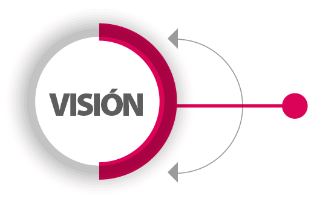

Sobre Nosotros
En Huerto Hogar, creemos en una alimentación saludable, sostenible y responsable. Somos una iniciativa familiar que conecta a productores locales con consumidores conscientes, promoviendo el comercio justo y el cuidado del medio ambiente.
Nuestra misión es ofrecer productos frescos, libres de químicos y de excelente calidad directamente del campo a tu mesa. Trabajamos con pequeños agricultores de la región para fomentar el desarrollo local y reducir la huella de carbono asociada al transporte de alimentos.

Misión
Promover el consumo responsable y saludable, apoyando a productores locales y cuidando nuestro planeta.

Visión
Ser un referente en el comercio sostenible y en la educación sobre alimentación saludable para toda la comunidad.